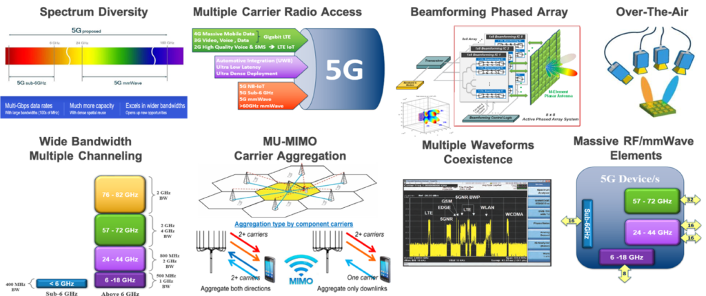
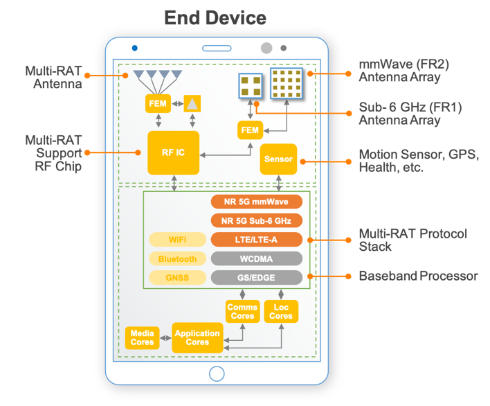
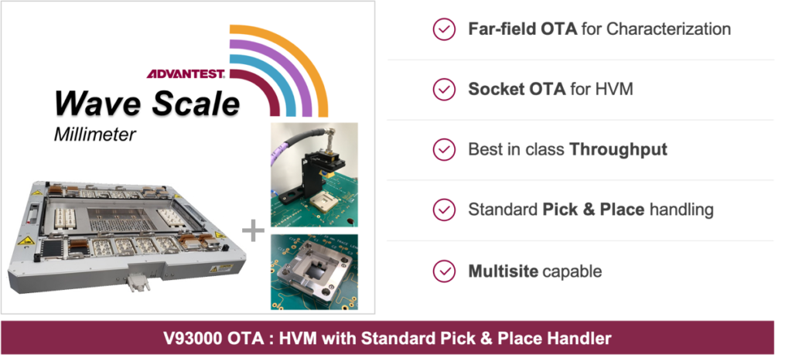

By Adrian Kwan, Senior Business Development Manager, Advantest America
Many companies, especially fabless chipmakers, are looking at how the 5G network will be formulated, as their products will need to change in order to meet the criteria for connecting to the network. Makers of sub-6GHz, millimeter-wave (mmWave), Wi-Fi, Bluetooth, WiGig and other types of chips are all looking at how they will need to adapt their future devices to this purpose. This is a broad challenge for the industry because the 5G network will be very different from the current 4G networks. Not only will network deployment need to change, but also the infrastructure, topology, base station deployment, and other parameters. It will require huge investment – everyone from semiconductor makers to mobile service providers to those building base stations will need to align to enable successful 5G deployment.
Today, we’re at a point where the infrastructure is beginning to be in place. Some countries have chosen to adopt sub-6Ghz for 5G and not pursue mmWave deployment, while more developed countries, e.g., the U.S., Japan and Korea, want to move immediately to mmWave so that they can begin deploying it in major cities. Of course, with the world currently in the midst of the COVID-19 pandemic, the supply chain is being impacted. There was already going to be a delay of a quarter or two getting products to market for those components which are manufactured in China, and while things are improving there, the rest of the world has yet to hit the top of the outbreak curve, so things are still very fluid to date. Opinions differ as to whether 5G deployment will be delayed, or if, in fact, the pandemic may actually accelerate 5G adoption.
Regardless, we are at the beginning of the 5G rollout. Few mobile products are currently being sold into the market to tap into the 5G network, mainly because mobile network providers haven’t fully deployed their 5G networks. From now through 2021, deploying the infrastructure will be critical so that it’s in place before 5G-enabled mobile devices begin to hit the mainstream market – which, we believe, will still happen sometime in 2022 timeframe.
As an ATE company, we deal with many customers in the fabless space, and these companies make devices that are challenging to test. ATE must therefore be at the forefront of what customers are doing and develop innovative solutions to help them address their test challenges. The 5G realm introduces a variety of new technology considerations, as shown in Figure 1, and these new areas translate into test challenges. To stay on top of these challenges, we have solutions that can be deployed to test almost any type of 5G device, whether FR1 (sub-6GHz LTE) or FR2 (mmWave). Moreover, we are already looking ahead to the newer Wi-Fi 6E frequency band, which will integrate into the 5G network when that convergence takes place.
Figure 1. Deploying 5G involves a number of key attributes, all of which pose new challenges for test.
Tech considerations, test solutions
As we know, 4G has deficiencies that 5G can overcome. With these improvements comes the need to deal with higher frequency bands, wider bandwidth, shorter coverage distances, signal penetration issues, and other aspects that impact how 5G is deployed in a city. While the next generation of mobile phones will have much more complexity and capability built into them than 2G, 3G and 4G models (Figure 2), most consumers won’t pay double or triple for a new phone, so phone makers will need a cost-effective test solution that can accommodate the added complexity. Fabless chipmakers and ATE providers are always looking into ways to reduce costs by implementing newer test methodologies, and customers are embracing new ways of performing RF and mobile wireless testing with these new test strategies.
Figure 2. Next-generation consumer devices will feature multiple antennas and other devices, further complicating the test process.
Test also depends on packaging. Packaging has evolved significantly over the past two years, impacting the way we handle and test devices, and 5G devices will necessitate changes in packaging. As an ATE company, Advantest collaborates with packaging companies to understand why and how they’re implementing new approaches to ensure that our systems will be able to handle these packaged devices. In addition to our core ATE business, we have expanded our device-handling business unit, acquiring companies to help us address requirements of higher-gigabit devices such as high-speed sockets and new load-board designs.
A key emerging driver for test is the growing trend of antenna-in-package (AiP) devices. We are moving toward higher-frequency bands in the mmWave space, and this is creating demand for components to be more compressed and consolidated into a single package. AiP technology is driving the trend toward FR2-type devices, in which the antenna module can be integrated with other pieces, such as the front-end module, in a single package or die that then has to be tested. This type of device will be required in multiple quantities in products such as advanced mobile phones or tablets, creating a huge explosion in volume when fully deployed. To help address this coming demand, we have developed new, contactless technology, currently in beta test, that will further advance our ability to handle AiP testing.
Currently, we have a proven platform solution in place, pairing our flagship V93000 tester with our Wave Scale test cards. The V93000 Wave Scale Millimeter targets next-generation 5G-NR RF devices and modules, and can address high-volume manufacturing requirements (Figure 3). The system is scalable and can deliver up to 64 bi-directional mmWave ports, allowing different 5G and Wi-Gig frequency modules to be used, as well as new modules to be added when new frequency bands being rolled out.
Figure 3. The Advantest V93000 Wave Scale Millimeter addresses customer requirements for wideband 5G-NR testing.
The V3000 Wave Scale architecture has extended its wideband testing functionality, so it can handle ultra-wideband (UWB), 5G-NR mmWave up to 1 GHz, WiGig (802.11ad/ay) up to 2 GHz, and AiP devices, in addition to beamforming and OTA testing. It also provides a pathway for customers to lower the cost of test for their current and upcoming 5G-NR devices while still making use of their existing investment in Wave Scale RF instrument. Like our other Wave Scale solutions, Wave Scale Millimeter is fully integrated with our SmarTest 8 programming architecture. Customers can use the software to generate a test program in just a few weeks with our latest mmWave library, further shortening time to development and eventually time to market for their 5G devices.
Conclusion
The requirements for 5G communications have become a key challenge for the ATE industry due to a jump in frequency range and bandwidths and the larger number of RF ports per device. The 5G standards are not yet final, and the industry is still learning how to test these devices, with efforts evolving as new devices are developed. As we’ve discussed here, Advantest has developed an ideal solution – the V93000 Wave Scale Millimeter – that is scalar, modular and can easily adapt to new technology requirements.
Our product portfolio, together with our consulting capabilities, enables Advantest to offer customers a one-stop service that meets all of their test needs. This is particularly desirable in the face of ongoing technology evolution and consolidation – not only for 5G, but also high-performance computing (HPC), artificial intelligence (AI), and other advanced technologies. Our exacting global customers want to have one place they can go to obtain a solution based on a whole architecture. This expansion of our offerings puts us in the forefront of addressing next-generation devices and new testing methodologies.

